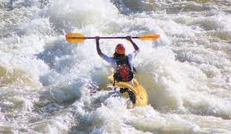

Kayaking in Scotland
In Scotland you will come across a variety of types of kayaking, from sea kayaking, open canoeing, kayaking activities for families and more. Kayaking is a popular watersport for individuals and families alike to try out on their holiday in Scotland and is something you can find on offer in all corners of the country.
Here are some places to get started
- Orkney, Shetland, Skye and the Outer Hebrides - Some of the most spectacular and challenging sea cliffs, arches and tunnels in Europe can be found in Orkney, including the famous Old Man of Hoy.
- Inverness - Try the incredible Great Glen Canoe Trail, which travels from coast to coast through an ancient route of rugged mountainous landscapes in northern Scotland!
- River Tay - Weaving its way through Perthshire, the Tay is one of Scotland's longest and most famous rivers, offering steady conditions for both beginners and advanced kayakers.
- Loch Morlich - Located 10 minutes from Aviemore, Loch Morlich is a great place to try out kayaking.